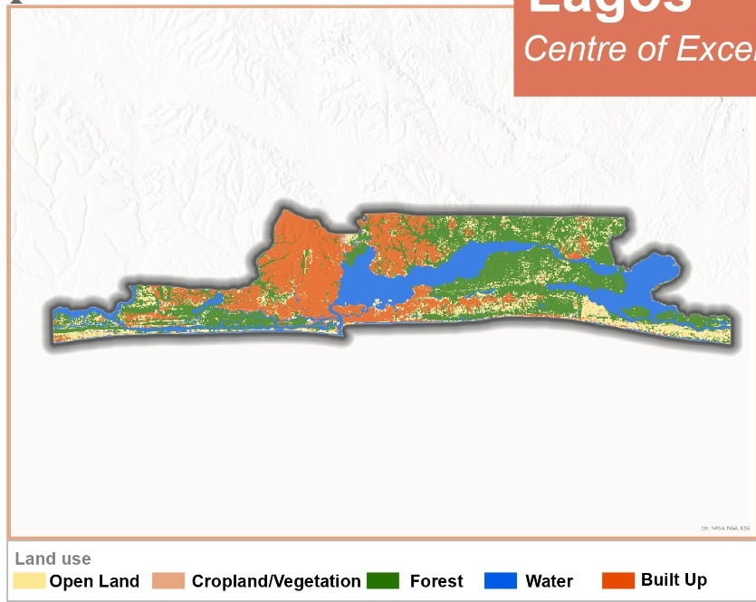
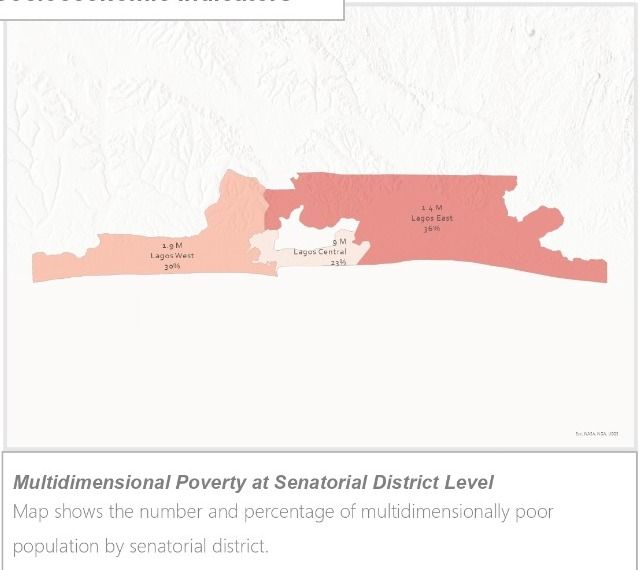
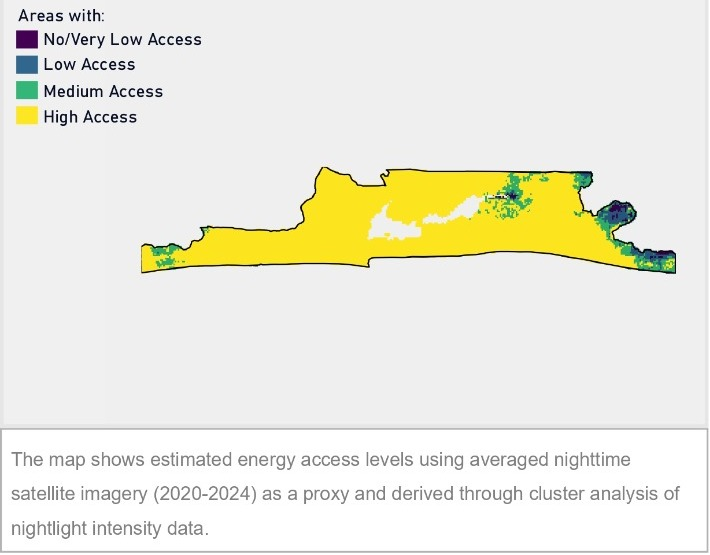
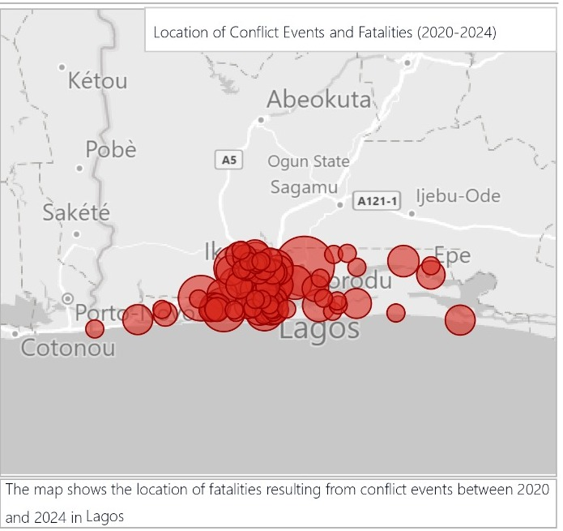

Executive profile first
The overview combines headline KPIs, strategic reading and spatial pressures so users quickly understand Lagos before opening sector tabs.
Centre of Excellence. Nigeria’s largest urban economy, coastal trade gateway and innovation hub, presented through a decision-ready development dashboard.
A concise executive section that brings together demography, fiscal scale, service access and risk exposure. Use it to understand the Lagos profile before moving into sector-specific evidence.
The overview combines headline KPIs, strategic reading and spatial pressures so users quickly understand Lagos before opening sector tabs.
Lagos shows strong averages, but urban density, coastal exposure, deprivation pockets and service quality gaps still need targeted planning.
Charts compare Lagos with Nigeria and the South West where available, helping users separate state performance from regional patterns.
Lagos performs above national benchmarks on education, electricity, water and ICT access, while poverty pockets, food-security pressure, sanitation quality, coastal erosion and conflict-event concentration require focused planning.
Median age: 25 · Children/adolescents: 40.16%
Estimated GDP · IGR share: 51.1%
HDI vs Nigeria: 55.0

Review the economic base, fiscal position, infrastructure access, connectivity and labour-market structure. This section is organised for planning discussions and investment prioritisation.
The fiscal view separates internally generated revenue, total expenditure and social-sector spending per capita to support budget discussions.
Energy access, household connectivity and road density are grouped with economic indicators because they shape productivity and inclusion.
Informal employment, youth NEET and sector participation show where growth may not yet translate into resilient livelihoods.
High literacy and service access coexist with poverty pockets, food-security pressure and household-level WASH constraints.
Each chart is presented as Lagos vs national and regional benchmarks to make relative performance easier to interpret.
Health, education, WASH and food-security indicators are separated so teams can navigate directly to the sector they need.


Summarise conflict-event concentration, fatality categories and evidence sources. This section supports risk-sensitive programming and geographic targeting.
The conflict profile summarises event categories and fatalities for 2020–2024, with map evidence for spatial interpretation.
Conflict patterns should be read together with poverty, youth, food security and service indicators for risk-sensitive programming.
The source note lists the data families used, making the profile easier to validate and update as new figures become available.
Between 2020 and 2024, Lagos recorded 258 violent conflict-related events resulting in close to 416 fatalities. Fatalities from events categorized as “Other” accounted for 43%, followed by communal conflict at 22%.

Use a single consolidated table for technical review. It keeps every Lagos indicator beside Nigeria and South West benchmarks, including the source year used in the dashboard.
The table keeps all indicators in one place instead of scattering them across many small tables.
The benchmark columns make it easier to see where Lagos is ahead, aligned or behind regional and national patterns.
Each row includes the indicator year so technical users can judge freshness and avoid mixing periods without context.